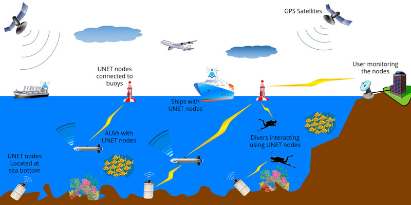

Over the past few decades, communication technology has percolated into every aspect of our lives, and we have come to take it for granted. Most of the communication technology we use relies on electromagnetic waves (radio waves, visible light, etc) that get rapidly absorbed by water. Hence the technology is ineffective for underwater communication, except at very short distances or extremely low data rates. Most underwater communication systems today use acoustic waves, which can travel long distances in the right conditions. However, they pose new challenges that need to be overcome, before we can effectively use our communication technology underwater. The Unet project strives to develop technologies and promote community collaboration in the area of underwater networks.
The Unet project started at the Acoustic Research Laboratory (ARL) of the National University of Singapore in 2004. Over the years, theoretical advances, careful engingeering and extensive field testing have allowed us to develop networking technology that now provides robust performance in challenging conditions. A substantial part of the developed technology is freely available for academic and research use. Commercial products and solutions based on this technology are available through Subnero.
UnetStack is an agent-based network stack that lies the heart of the Unet project. It not only runs in underwater communication nodes, but also forms the backbone of an Underwater Network Simulator that can be used for development and testing of underwater network technology. The simulator was designed with two key goals – to be easy to learn and use, and to allow agent implementations to be shared between deployment environment and simulation environment. Essentially, once a protocol is developed and tested in simulation, it is ready to be deployed and tested at sea in any UnetStack-compatible modem.
(Illustration courtesy of Subnero Pte Ltd)